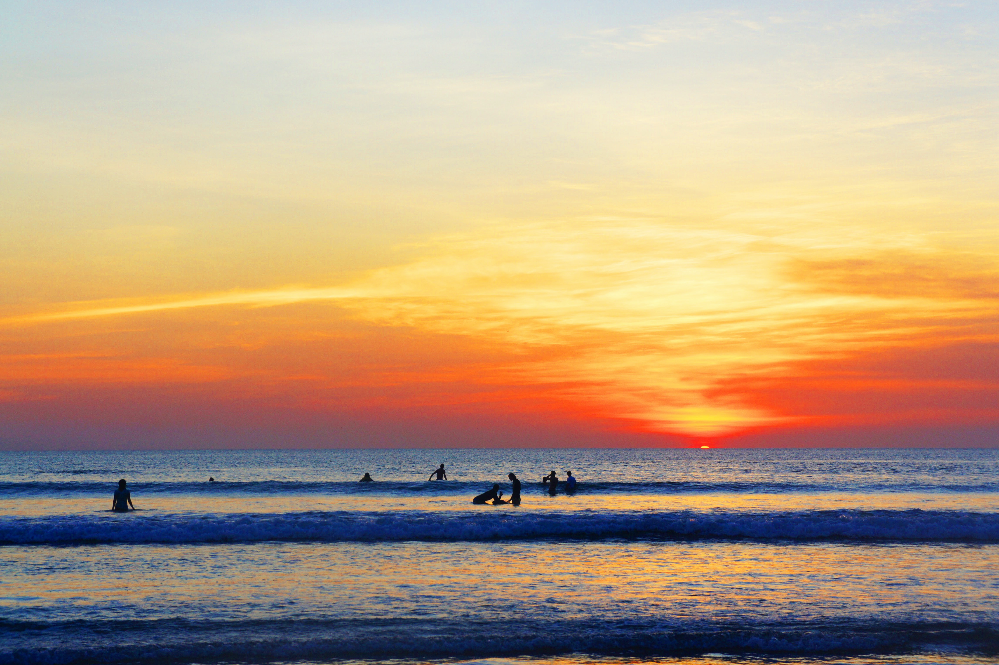

Bali



Bali adalah tempat wisata yang paling menarik untuk dikunjungi karena banyak terdapat tempat - tempat yang pemandangannya sangat indah sehingga banyak turis maupun orang dalam negeri pergi mengunjunginya. Tidak hanya pemandangannya, melainkan pantai dan wisata - wisata lainnya tidak kalah menarik. Banyak yang berkunjung hanya untuk berfoto, berekreasi, liburan, bahkan hanya untuk menenangkan fikiran saja.
Berikut beberapa gambaran tempat wisata yang berada di Bali :
Tempat Kunjungan Wisata

Pura Tanah Lot

Garuda Wisnu Kencana

Pura Ulun Danu

Ubud Monkey Forest
Pura Tanah Lot
Tanah Lot salah satu pura penting bagi umat Hindu Bali dan lokasi pura terletak di atas batu besar yang berada di lepas pantai. Pura Tanah Lot merupakan ikon pariwisata pulau Bali. Selain itu salah satu obyek wisata terkenal di pulau Bali yang wajib di kunjungi. Karena saking terkenalnya tempat wisata di Bali ini, maka hampir setiap hari, objek wisata ini selalu ramai dengan kunjungan wisatawan.
Garuda Wisnu Kencana
Garuda Wisnu Kencana Cultural Park), atau kerap disebut dengan GWK, adalah sebuah taman wisata budaya di bagian selatan pulau Bali. Taman wisata ini terletak di Desa Ungasan, Kecamatan Kuta Selatan, Kabupaten Badung, kira-kira 40 kilometer di sebelah selatan Denpasar, ibu kota provinsi Bali. Di sini berdiri megah sebuah landmark atau maskot Bali, yakni patung Garuda Wisnu Kencana yang menggambarkan sosok Dewa Wisnu menunggangi tunggangannya, Garuda, setinggi 121 meter.
Pura Ulun Danu
Objek wisata pura Ulun Danu Bedugul sangat cocok untuk anda kunjungi jika anda menyukai keunikan arsitektur khas Bali, tata kebun dengan banyak jenis bunga, dan lingkungan alam yang masih alami. Pada saat anda tiba dipintu gerbang masuk tempat wisata Pura Ulun Danu Bratan Bedugul, anda sudah dapat melihat candi bentar, keunikan arsitektur pura, suasana asri, udara sejuk dan lingkungan bersih.
Ubud Monkey Forest
Monkey Forest Ubud menjadi destinasi wisata yang sangat populer di Pulau Bali. Berlokasi di Ubud, tempat wisata yang satu ini pun jadi lokasi yang banyak dikunjungi oleh wisatawan. Baik wisatawan asing ataupun domestik, kerap menyempatkan waktunya untuk datang ke tempat ini.